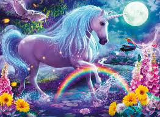
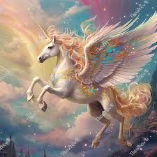
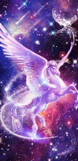
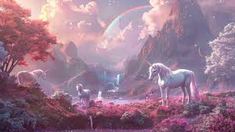

Did you know? Unicorns are a symbol of purity, freedom, and magic!
Unicorns have been mentioned in myths from ancient Greece to China.
In medieval times, unicorn horns were believed to neutralize poison!
The official animal of Scotland is the unicorn!
